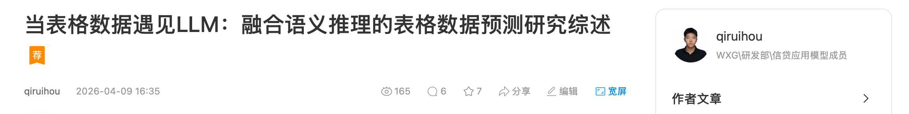
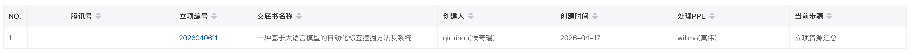

01 · 主要负责人 · 2026.01–至今
面向征信补全的婚姻状况标签挖掘与轻量化落地
项目先用两阶段树模型完成婚姻状态的规模化补齐，再用 AgentFlow 解决解释、产品联动和少样本冷启动问题；外部版补充表格 LLM 微调与蒸馏实验，说明如何把高成本推理压到可部署的小模型。
- 补齐标签用户
- 约 9,957 万
- 树模型 OOT
- AUC 0.75 / KS 0.37
- 60% 召回下 Agent 查准率
- 43%
项目背景｜征信字段缺失影响画像与风险识别
银行征信中的婚姻字段存在缺失，而预研显示离婚群体逾期 30+ Lift 约为 1.81。婚姻状态不是单纯的画像字段，也会影响白名单授信、风险分层和后续人群策略。
项目最早从传统树模型开始：先判断能否用微信行为数据稳定补齐婚姻状态，再看这个标签在风险识别上是否有增益。后续引入 AgentFlow，不是为了替代树模型，而是补树模型不擅长的部分：解释理由、和产品一起核对样本、在黑产冷启动等新场景里快速复用少量样本。
项目目标｜从规模化补标扩展到可解释、可迁移的标签开发链路
我把项目拆成三层。第一层是传统建模，用 XGBoost / TabPFN 完成大规模、低成本、稳定的婚姻状态补齐；第二层是 AgentFlow，用 RAG、Few-shot 和多专家推理补充难例、解释和少样本冷启动能力；第三层是外部版展示的微调与蒸馏实验，用来探索如何把高成本 Agent 推理沉淀到更便宜的小模型。
这样做的好处是边界清楚：树模型负责近亿级稳态任务，Agent 负责解释和新标签探索，小模型承接后续低成本部署。每一层都服务于同一个目标：把标签从“能预测”推进到“能讨论、能复用、能规模化”。
技术路径｜先树模型打底，再用 AgentFlow 补解释和冷启动
第一阶段是传统建模。 我采用两阶段级联建模，以 XGBoost 为主路径，并探索 TabPFN 在表格小样本任务上的补充价值。评估不仅看 OOT AUC / KS，也看 Top 分段风险识别率，避免离线排序指标和业务使用脱节。
第二阶段是 AgentFlow 标签挖掘。 我将结构化行转换为键值对或 Markdown 文本，把标注样本写入向量库，通过 RAG + Few-shot 动态召回相似案例；新旧标签由意图路由进入不同路径；并行专家从多个证据维度分析，最终用类别 token 的 logprob 作为可排序置信度。完整链路可以概括为：
特征提取 → SQL 生成 → 逻辑判断 → 报告生成
这一步的价值主要在产品协作和泛化能力。Agent 会给出可解释理由，产品和算法可以对着具体 evidence 讨论标签是否成立；面对黑产冷启动、商旅人士等新场景时，也能用少量样本和规则快速启动，而不必每次从头训练一套大样本模型。
第三阶段是外部版的微调与蒸馏探索。 表格压成一维文本会损失列身份和二维位置，因此加入 coltag 列标记与 pos2d 单元格坐标。教师模型使用 Qwen3.5-9B，配合 LoRA / DoRA 做生成式 SFT；学生模型为 Qwen3.5-0.8B。蒸馏目标为：
$$ \mathcal{L}_{KD} =\alpha\,\mathrm{CE}(y,p_s) +(1-\alpha)T^2\cdot \mathrm{KL}\!\left(p_t^{(T)}\parallel p_s^{(T)}\right). $$
LoRA 的低秩更新可写为 $\Delta W=BA$；DoRA 将更新拆成幅度与方向；AdaLoRA 按重要性动态分配 rank。实验结论是：少样本下，结构编码和数据量通常比单纯更换 PEFT 变体更重要。
业务数据不便公开时，我用 heart、blood、diabetes、car、creditg 等 TabLLM 公开数据集复现同一套序列化、PEFT、结构编码和蒸馏管线。代表性结构编码结果如下：
| 数据集 | 纯文本 | pos2d |
|---|---|---|
| heart | 75.0 | 79.3 |
| diabetes | 64.9 | 73.2 |
| blood | 64.9 | 71.0 |
项目结果｜近亿级补标、难例补回与技术沉淀
传统建模在 OOT 上取得 AUC 0.75、KS 0.37，补齐约 9,957 万用户婚姻标签；离婚标签评分 Top 3% 区域的风险识别率达到大盘 1.51 倍。Agent 侧补回 XGBoost 漏召的约 10% 难识别样本，在 60% 召回率下查准率达到 43%，相对 XGBoost 提升约 20%。
在公开集上，32-shot 下 LoRA 与 DoRA 接近，AdaLoRA 多数更弱；4-shot 时 LoRA 相对 XGBoost 更占优，样本增加后两者互有胜负。公平蒸馏要求在同一批 128 个样本上比较 gold-SFT 与 KD，KD 相对 SFT 的 AUC 差值分别为 heart +0.7、blood +14.7、diabetes −0.5、car +1.1。9B 教师 OOT AUC / KS 为 0.72 / 0.45，0.8B 学生为 0.71 / 0.41。
相关工作沉淀为腾讯内网 KM 技术文章，并申请发明专利《一种基于大语言模型的自动化标签挖掘方法及系统》。对面试表达而言，这个项目的价值不是单一婚姻标签，而是一条可迁移到其他用户画像任务的标签开发链路。
成果佐证｜KM 技术好文与发明专利
KM 技术好文
项目方法论已沉淀为腾讯内网 KM 技术文章，用于记录表格 LLM、Agent 标签挖掘和蒸馏实验的技术复盘。

发明专利材料
围绕自动化标签挖掘链路形成发明专利交底书，覆盖特征提取、SQL 生成、逻辑判断与报告生成闭环。
